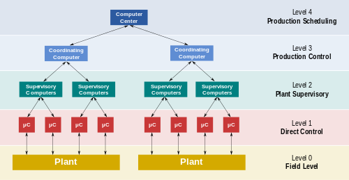

SCADA
Table of Contents
1. TODO SCADA SCADA
There once was a city that lost its might After a SCADA hack in one single night The power went out And all we could shout Is "How could this happen, oh what a sight!" - Anon
Supervisory control and data acquisition is a control system for high level supervision of machines and processes. It is used with Programable Logic controllers which control the processes/machines.
1.1. Control Operations

1.1.1. Level 0
Field Level devices. examples:
- Temperature sensors
- Control valves
- Flow sensors
1.1.2. Level 1
Level 1 contains input/output devices, and related processors This is where you will find Programmable logic controllers and remote terminal units.
1.1.3. Level 2
Cotains readsing and reports. Data is formated so that a operator using a Human Machine interface can make operating decisions to adjust or overide RTU or PLC controls. Data is Fed into a historian, which is often just a normal DBMS. The historian is used for analytics.
1.1.4. Level 3
Deals with production control level. it doesnt control the process but instead manages taget goals and monitoring.
1.1.5. Level 4
Production scheduling
1.2. Generations of SCADA
Scada has evolvedd over the years as tech improved
1.2.1. First Generation Monolithic
Early Scada was done by larg minicomputuers. Networks didnt exists at the the time. At this point they was indpendent systems with no networking. Communication protocols was proprietary. Some was developed as turn key operations and ran on the PDP-11
1.2.2. Secend Generation Distributed
SCADA info and commands was distributed across multiple sites and was connected through a lan. Information was sent in real time. Each station was responsible for a task, which was more light weight at the time. Networking was not standardized. since they was proprietary few people knew if they newtork was secure.
1.2.3. Third Generation Networked
Like a Distributed network many systems can be reduced and networked through communications protocols. The network can be spread acrosse more than one LAN called a Process Control network.
1.2.4. Forth Generation Web based
This is where we are, the crux of problems With the advent of the internet let many SCADA systems to implement Web based Human machine interfaces and control panles
1.2.5. Future: Cloud based
Some are now using cloud based tech but the extent beyond just for analytics is not known as this needs more research.